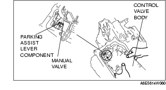
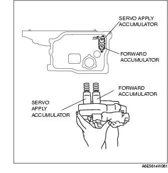
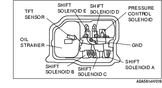

Control valve body installation [FN4A-EL]
On-Vehicle Installation

1. Install the accumulator springs and accumulators into the transaxle case.

2. Install the control valve body component.

Tightening torque Bolt length (measured from below the head)
3. Install the oil strainer.
4. Match the harness colors, then connect the solenoid connector and TFT sensor.
5. Install the ground.

Tightening torque
6. Apply a light coat of silicon sealant (TB1217E) to the contact surfaces of the oil pan and transaxle case.

7. Install the oil pan.
Tightening torque8. Connect the negative battery cable.
9. Add ATF and with the engine idling, inspect the ATF level. (See AUTOMATIC TRANSAXLE FLUID (ATF) REPLACEMENT [FN4A-EL].)
10. Carry out the mechanical system test. (See MECHANICAL SYSTEM TEST [FN4A-EL].)
11. Carry out the road test. (See ROAD TEST [FN4A-EL].)